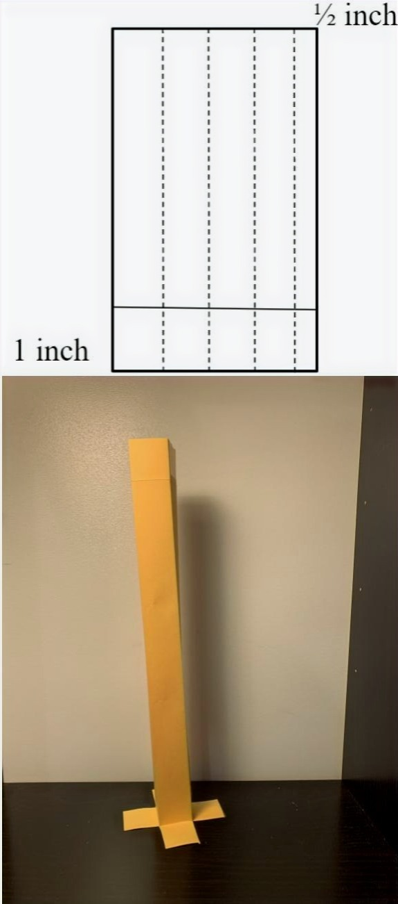
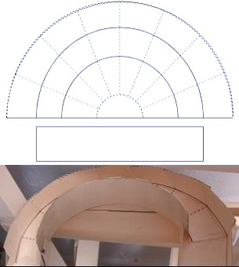

Note
This page will contain instructions for the individual elements, not to a specific track. For my track, I used carstock paper to ensure durability.
Basic Components
These are the most essential and easy to make elements of the track
Columns

Beams

Diagonal Supports
Track Pieces
Intermediate Components
These parts provide more length to the track in the same amount of space
Turns

Larger Turns
Funnels
Advanced Components
These parts are a bit more difficult to make, but they can make the track much more unique